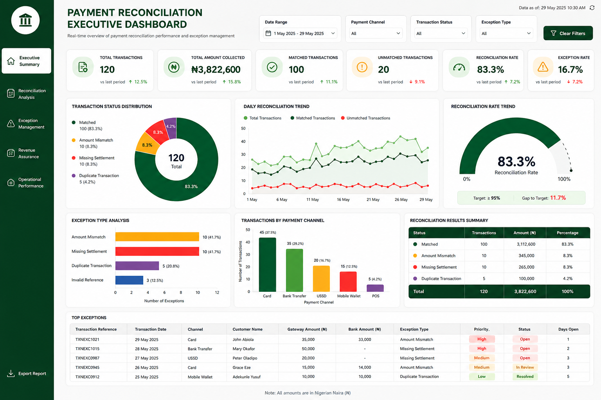

Business Problem
Organizations receive payments through multiple channels such as bank transfers, payment gateways, POS terminals and online platforms. Finance teams often spend significant time manually reconciling transactions, resulting in delayed reporting, unmatched transactions, operational inefficiencies and increased risk of revenue leakage.
Project Objective
To optimize and automate the payment reconciliation process through automated validation, transaction matching, exception management and reporting capabilities.
Current State (AS-IS)
The existing reconciliation process relied heavily on manual intervention, creating delays, reconciliation errors and reporting inefficiencies.

Future State (TO-BE)
The future-state process introduces automated validation, matching engines, exception handling and automated reporting.

Process Diagrams
BPMN Diagram
Swimlane Diagram

Workflow Diagram

Executive Dashboard Design
A management dashboard was designed to provide real-time visibility into reconciliation performance, exception management, settlement monitoring and revenue assurance.

Expected Business Benefits
80%
Reduction in Manual Reconciliation Effort
95%
Automated Transaction Matching Rate
90%
Reduction in Reconciliation Exceptions
100%
Real-Time Reporting Availability
Business Analyst Deliverables
| Deliverable | Status |
|---|---|
| Business Requirements Document (BRD) | Completed |
| AS-IS Process Analysis | Completed |
| TO-BE Process Design | Completed |
| BPMN Diagram | Completed |
| Swimlane Diagram | Completed |
| Workflow Diagram | Completed |
| User Stories | Completed |
| Dashboard Requirements | Completed |
| Dashboard Design | Completed |
Skills Demonstrated
Business Analysis
Requirements gathering, stakeholder engagement and solution definition.
Process Mapping
AS-IS analysis, TO-BE design and process improvement initiatives.
Financial Operations
Payment reconciliation, controls, revenue assurance and reporting.
Process Automation
Validation engines, matching engines and exception management workflows.
Project Documents
Project artefacts and supporting documentation. Upload the documents later and connect them using the links below.